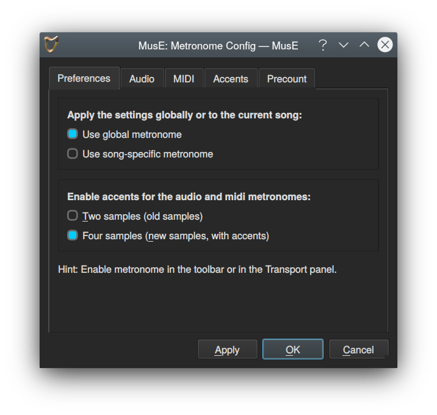

Metronome Configuration
MusE has a built-in metronome which can be used to play a steady ticking beat while playing or recording. It is enabled either with the Metronome toolbar toolbutton, clicking ‘Click’ in the MusE Transport window or the keyboard shortcut C
Configuration of the Metronome can be done with the Settings->Metronome dialog.

It can be configured to output clicks on the audio output and/or emit MIDI to be played back by an external MIDI device. By default audio output is enabled but not MIDI.
A few sound samples are bundled with MusE to be used as metronome sound. If you have a favourite metronome sound it is also possible to copy this file as a .WAV to the metronome folder in the local configuration directory $HOME/.config/MusE/MusE/metronome, the supplied metronome samples are placed under the installation directory in share/muse-4.0/metronome.
Metronome precount feature:
When the play button is pressed it is often desirable to have a metronome ‘count-in’ before the transport actually starts moving, to get a ‘feel’ for the beat before the song starts playing or recording.
Click the precount ‘Enable’ to turn this feature on. You can choose the number of precount bars, the time signature, and whether to use that time signature or the Master Track’s current time signature.
The precount will automatically fill in any ‘in-between’ space if the red location cursor is not currently located on a bar.
Example: If the precount is set for 2 bars, and the cursor is currently on bar 3 beat 2, when play is pressed the precount will count for 2 bars + 1 beat. Then the transport will start and the metronome will take over for the remaining 3 beats in bar 3, and for the rest of the song.
Tempo and Tempo-map
The default setting for the metronome is 120 bpm, but it would be a bit sad if this was not configurable. This can be changed on the Tempo toolbar or the Transport panel View->Transport Panel or keyboard shortcut F11.
Forthermore, by default the mastertrack-tempo is enabled (the green button on the Tempo toolbar or the Transport panel). This can be a bit confusing for the beginner but for making music with tempo changes this is a necessity.
What it means in practice is that changing the tempo will be added as a tempo change where the play position is currently at. So if you are not making music with tempo changes, make sure to either uncheck the mastertrack-tempo button or always make the change after having rewinded the song to the beginning.
*If you happen to have done a tempo change unintentionally and it is a little late to undo the Master track list editor is your friend. More about this here
NOTES:
The precount feature uses the ‘slow-sync’ feature of Jack Transport. The precount ‘holds up’ the transport from starting while it counts. This means any Jack Transport client such as QJackCtl can be used to start playing and precount will still work - you don’t have to use the transport buttons in MusE. But this means it possible for another Jack client to ‘hold-up’ the transport from starting longer than we anticipated. For example if precount wants to wait for 4 seconds while it plays, another Jack client might actually take say 10 seconds while it syncs up its internals. This would produce a gap at the end of precount. A work-around is that if you know you will be working with other very slow-sync Jack clients, set precount to a higher number of bars, say 8 instead of 4 for example. Currently MusE enforces a timeout limit of 30 seconds before the transport must absolutely begin rolling no matter what.
Note that when Jack is used, Jack Transport is optional. In the MusE Transport window, click the ‘Jack’ button or see the menu ‘MusE Settings -> Midi Sync’. When Jack Transport is not used, or when the Dummy or RTAudio drivers are used, MusE has a built-in Transport mechanism. Therefore, precount works no matter what audio driver is used.